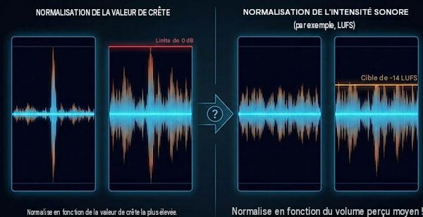
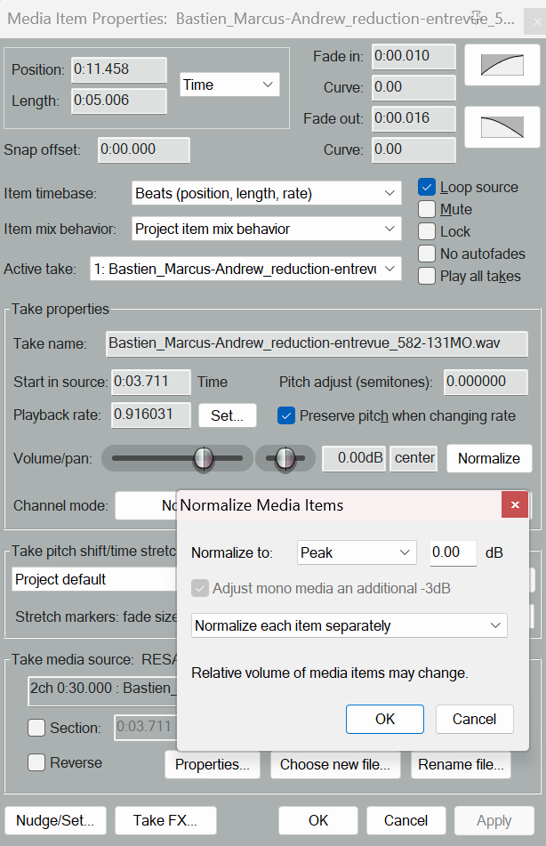

Types de compression selon le média de diffusion¶
 Source: futurelearn.com
Source: futurelearn.com
La compression audio ne se fait pas nécessairement de la même façon selon le média sur lequel le son sera diffusé.
Un fichier destiné à un film, à un jeu vidéo, à une plateforme de diffusion en continu ou à un réseau social peut avoir des exigences différentes en matière de :
- dynamique
- niveau sonore
- format
- débit
- fréquence d'échantillonnage
- résolution
- volume final
L'objectif est toujours de trouver un équilibre entre qualité sonore, dynamique et compatibilité avec le média de diffusion.
Types de compression selon le média de diffusion¶
La compression audio utilisée dépend de l'endroit où le son sera diffusé. Chaque média a ses propres contraintes de qualité et de taille de fichier.
| Média de diffusion | Format courant | Caractéristiques |
|---|---|---|
| Production audio | WAV | Qualité maximale, aucune compression avec perte |
| Montage vidéo | WAV, AIFF | Préserve la qualité pendant le montage |
| Baladodiffusion | MP3 | Bon compromis entre qualité et taille |
| Streaming musical | MP3, AAC | Compression optimisée pour Internet |
| Site Web | MP3 | Téléchargement rapide |
| Téléphone mobile | AAC, MP3 | Fichiers plus légers |
| Jeux vidéo | OGG, MP3 | Taille réduite et chargement rapide |
| Radio | MP3, AAC | Diffusion efficace avec bonne qualité |
Notions clés à retenir
- WAV : meilleure qualité, fichiers volumineux.
- MP3 : plus petit, légère perte de qualité.
- AAC : compression plus efficace que MP3.
- Plus la compression est forte, plus la taille du fichier diminue.
- Plus la compression est forte, plus il peut y avoir une perte de qualité.
Contrôle de la plage dynamique¶
La plage dynamique correspond à la différence entre les sons les plus faibles et les sons les plus forts d'une production.
Par exemple :
Son faible Son fort
↓ ↓
-40 dB -3 dB
← dynamique →
Une grande plage dynamique signifie qu'il existe une grande différence entre les sons faibles et les sons forts.
Une petite plage dynamique signifie que les niveaux sont plus rapprochés.
La compression dynamique¶
 Source: easyzic.com
Source: easyzic.com
Le compresseur réduit automatiquement le niveau lorsque le signal dépasse un certain seuil.
Exemple :
Avant compression :
Faible ──────────────── Fort
-30 dB -3 dB
Après compression :
Faible ────────── Fort
-30 dB -10 dB
Le son fort est rapproché du son faible.
Normalisation des fichiers¶
 Source: ampedstudio.com
Source: ampedstudio.com
La normalisation consiste à ajuster le niveau général d'un fichier audio selon une référence.
Il existe différentes façons de normaliser.
Normalisation au peak¶

Source: ampedstudio.comOn ajuste le fichier en fonction de son niveau de crête.
Exemple :
Peak original : -4 dBFS
Peak désiré : -1 dBFS
On augmente alors le niveau général de 3 dB.
Normaliser un fichier audio dans Reaper¶

La normalisation permet d'augmenter ou de diminuer automatiquement le volume d'un élément audio afin que son pic le plus élevé atteigne un niveau cible.
Procédure¶
- Importer ou enregistrer un fichier audio dans Reaper.
- Sélectionner l'élément audio à normaliser.
- Faire un clic droit sur l'élément.
- Choisir Propriétés de l'élément... (Item Properties).
- Cliquer sur Normalize.
- Reaper ajuste automatiquement le gain pour amener le niveau maximal à 0 dB.
- Écouter le résultat pour vérifier qu'aucune saturation n'est présente.
À retenir
- La normalisation modifie le niveau global du fichier.
- Elle ne corrige pas les différences de volume à l'intérieur de l'enregistrement.
- Elle est souvent utilisée pour rendre un fichier suffisamment fort avant le montage ou la diffusion.
- Une normalisation excessive peut rendre plus apparents les bruits de fond.
Compression et normalisation : ne pas confondre¶
| Compression dynamique | Normalisation |
|---|---|
| Modifie la dynamique | Modifie principalement le niveau général |
| Réduit les écarts entre faible et fort | Déplace le niveau du fichier |
| Peut modifier le caractère du son | Ne modifie normalement pas la dynamique |
| Utilise seuil, ratio, attaque, release | Utilise une valeur cible |
| Peut créer un effet sonore | Sert principalement à ajuster le niveau |
Exercices — Création de motifs sonores dans REAPER¶
Consignes générales¶
Pour chaque exercice :
- Trouver un son.
- Travailler dans REAPER.
- Conserver le son original.
- Créer une version transformée.
- Ajuster les paramètres manuellement.
- Éviter les presets lorsque c'est possible.
- Exporter le résultat en WAV.
- Écouter le résultat avec un casque ou des écouteurs.
1. Balancement¶

Motif
Balancement
Exercice 1A — Gauche / droite¶
Objectif
Créer un mouvement régulier du son entre la gauche et la droite.
Consignes
- Importer le son dans REAPER.
- Ajouter une automation du Pan.
- Faire circuler le son :
Gauche → Centre → Droite → Centre → Gauche → etc
- Répéter le mouvement pendant toute la durée du son.
- Faire des transitions fluides.
Défi
Le mouvement doit être régulier et donner l'impression que le son se déplace réellement dans l'espace.
Exercice 1B — Balancement irrégulier¶
Objectif
Créer un mouvement stéréo plus organique et imprévisible.
Consignes
Créer une automation différente :
Gauche → Droite → Centre → Gauche → 70 % droite → 30 % gauche → etc
Modifier également la vitesse des déplacements.
Défi
Le mouvement ne doit pas suivre un rythme parfaitement régulier.
Résultat recherché
Créer l'impression d'un son qui tourne ou se déplace de façon imprévisible autour de l'auditeur.
2. Miroir¶

Motif
Miroir
Exercice 2A — Original / miroir¶
Objectif
Créer une deuxième partie qui est le miroir de la première.
Consignes
- Importer un son.
- Couper le son en deux.
- Conserver la première partie.
- Copier cette partie.
- Utiliser Reverse sur la copie.
- Placer la copie après l'original.
Original → Inversé
Créer une transition suffisamment fluide entre les deux parties.
Exercice 2B — Miroir stéréo¶
Objectif¶
Combiner inversion temporelle et déplacement stéréo.
Consignes
Créer :
Partie A
↓
Pan gauche
↓
Reverse
↓
Pan droite
La deuxième partie doit être le miroir temporel et spatial de la première.
Résultat recherché
Donner l'impression que le son est réfléchi dans un espace sonore.
3. Spirale¶

Motif
Spirale
Exercice 3A — Spirale de pitch¶
Objectif
Créer une montée ou une descente progressive du pitch.
Consignes
Utiliser ReaPitch et automatiser le pitch.
Exemple :
0 → +3 → +7 → +12 → +7 → +3 → 0
Résultat recherché
Le son doit donner l'impression de tourner autour d'une hauteur centrale.
Exercice 3B — Spirale complète¶
Objectif
Combiner plusieurs paramètres.
Utiliser au minimum :
- Pitch
- Pan
- Reverb
Faire évoluer les paramètres simultanément.
Exemple :
Pitch ↑
Pan gauche → droite
Reverb ↑
Volume ↓
Résultat recherché
Créer un son qui semble s'éloigner dans une spirale.
4. Time Stretch¶

Motif
Time Stretch
Exercice 4A — Ralentissement¶
Objectif
Découvrir la transformation temporelle.
Consignes
Créer trois versions du même son :
100 %
200 %
400 %
Comparer les résultats.
Questions
- Le son reste-t-il reconnaissable ?
- Qu'est-ce qui change dans sa texture ?
- Quels artefacts apparaissent ?
Exercice 4B — Transformation extrême¶
Objectif
Utiliser le Time Stretch comme outil de sound design.
Consignes
Créer une version extrêmement ralentie du son.
Essayer d'obtenir un résultat au moins quatre fois plus long que l'original.
Ajouter ensuite :
- Reverb
- EQ ou ReaEQ
- éventuellement ReaPitch
Résultat recherché
Transformer un son ordinaire en texture sonore.
6. Rebondissement¶

Motif
Rebondissement
Exercice 5 — Objet qui tombe¶
Objectif
Créer l'illusion d'un objet qui tombe et rebondit.
Consignes
Créer plusieurs copies du son.
À chaque rebond :
- diminuer le volume
- raccourcir le son
- modifier légèrement le pitch
Impact
↓
Rebond
↓
Rebond
↓
Rebond
Résultat recherché
L'auditeur doit pouvoir imaginer un objet physique.
6. Ping-Pong¶

Motif
Ping-Pong
Exercice 6 — Ping-pong rythmique¶
Objectif
Créer un motif rythmique avec le ping-pong.
Consignes
Créer plusieurs répétitions du son selon un rythme.
Exemple :
G . D . G D . G → etc + rebondissement
7. Flexion¶
Motif
Flexion
Exercice 7A — Pitch Bend¶
Objectif
Créer une flexion de la hauteur.
Consignes
Utiliser ReaPitch.
Automatiser le pitch :
0 → +12 → 0
Puis :
0 → -12 → 0
Résultat recherché
Créer une montée et une descente de hauteur clairement perceptibles.
Exercice 7B — Flexion extrême¶
Objectif
Créer un effet de sound design à partir du pitch.
Consignes
Créer une automation plus complexe :
0 → +12 → +5 → -7 → -12 → 0
Ajouter éventuellement :
- Reverb
- Automation de volume
Résultat recherché
Créer un son qui semble se tordre ou se déformer.
8. Inversion¶

Motif
Inversion
Exercice 8A — Son inversé¶
Objectif
Découvrir l'effet Reverse.
Consignes
- Importer le son.
- Dupliquer le fichier.
- Inverser la copie.
- Comparer avec l'original.
Exercice 8B — Transition inversée¶
Objectif
Créer une transition sonore.
Consignes
Utiliser un son inversé pour préparer l'arrivée d'un son original.
Son inversé
↓
↓
↓
Impact original
Ajouter éventuellement :
- Reverb
- Fade-in
Résultat recherché
Créer un effet de montée ou d'aspiration vers l'impact.
9. Vitesse de lecture¶

Motif
VITESSE DE LECTURE
Exercice 9A — Rapide / lent¶
Objectif
Observer l'effet de la vitesse de lecture sur un son.
Consignes
Créer quatre versions :
50 %
75 %
100 %
200 %
Comparer les résultats.
Exercice 9B — Accélération progressive¶
Objectif
Créer un son dont la vitesse augmente progressivement.
Consignes
Créer plusieurs segments :
Lent → Moyen → Rapide → Très rapide
Utiliser des changements de vitesse progressifs.
Résultat recherché
Créer une sensation d'accélération.
10. Percussion et résonance¶

Motif
Percussion et Résonnance
Exercice 10A — Transformer un son en percussion¶
Objectif
Créer une percussion à partir d'un son qui n'est pas une percussion.
Consignes
- Choisir un son.
- En extraire une petite portion.
- La répéter selon un rythme.
- Ajuster le volume.
Exemple :
X . X . X X . X
Résultat recherché
Le son doit devenir une nouvelle percussion.
Exercice 10B — Percussion résonnante¶
Objectif
Créer une percussion avec une longue résonance.
Consignes
Créer une percussion puis lui ajouter :
- ReaVerbate ou ReaVerb
- ReaPitch
- EQ
Expérimenter avec la durée de la réverbération.
Défi
Créer trois versions :
Petite pièce
Grande salle
Espace irréel
Résultat recherché
Faire entendre clairement la différence entre les trois espaces.
Projet final — Création d'un motif sonore¶
Créer un motif sonore original de 15 à 30 secondes.
Contraintes
Le projet doit utiliser au minimum :
- 3 motifs différents
- 1 automation
- 1 traitement temporel
- 1 traitement spatial
- 1 traitement de hauteur ou de timbre
Exemple :
Son source
↓
Time Stretch
↓
ReaPitch
↓
Balancement
↓
Delay Ping-Pong
↓
ReaVerbate
↓
Automation
↓
Motif sonore final
Objectif
Créer un motif qui pourrait être utilisé dans :
- un film
- un jeu vidéo
- une animation
- une publicité
- une installation multimédia